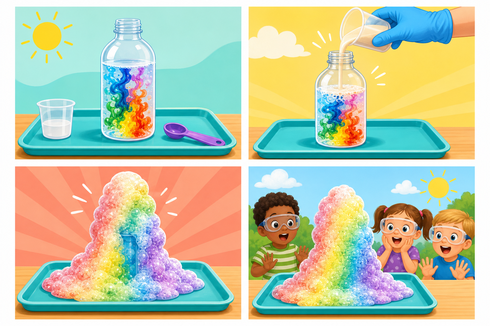

Little Lab Coats
🐘 Elephant Toothpaste Finale 🧼
Kindergarten Summer Wow Series — Lesson 4
☀️ Series: K Summer Wow📚 Grade: Kindergarten⏱️ Duration: 20–30 minutes🧪 Style: Summer science fun
🐘🫧🌋
Big foam, big cheers, excellent finale energy.
Summer wow goal: Save the giant foam plume for last. This is the curtain-dropper.
📋 Series note:
This lesson is intentionally not NGSS-aligned. It is built as a high-interest summer science experience for kindergarten children: low prep, big visual payoff, and lots of simple observation language.
🎯 Learning Objective
Students will watch a dramatic foaming reaction, describe what changed, and compare this bigger reaction to earlier bubbling experiments in the series.
💡 The Big Idea
A fast reaction makes lots of oxygen bubbles, and the soap traps them into a huge foam eruption.
🔬 The Science
Kid version: “The ingredients make a lot of bubbles very fast, and the soap turns them into giant foam.”
Parent move: keep the science sentence short, then let the child do most of the noticing out loud.
📦 Materials
- Empty plastic bottle
- Hydrogen peroxide (standard household strength)
- Dry yeast
- Warm water
- Dish soap
- Food coloring
- Funnel
- Tray or tub for containment
- Safety glasses for the adult and any close observers
🃏 Vibrant Lesson Cards
Use the illustrated card sheet as a quick visual walk-through before you begin, then revisit the cards after the experiment so children can retell what happened.

Illustrated summer wow card set for Elephant Toothpaste.
1. Set the bottle stage
The bottle, tray, soap, and color are ready before the final ingredient goes in.
2. Mix the helper
Yeast is stirred into warm water so it is ready for the reaction.
3. Foam blast
The bottle overflows with colorful foam in one dramatic burst.
4. Observe from a safe spot
Children watch, cheer, and describe the changes without crowding the bottle.
🔬 Let’s Get Started
Step 1 — Prep the bottle
Place the bottle on a tray, add hydrogen peroxide, a squirt of dish soap, and a few drops of food coloring.
Step 2 — Mix the yeast starter
In a separate cup, stir yeast into warm water for about a minute.
Step 3 — Set expectations
Tell children this is a watch-first experiment and ask them what they think the foam might do.
Step 4 — Pour and step back
Use a funnel to add the yeast mixture, then let children watch the foam race upward.
Step 5 — Describe the finale
Talk about the speed, size, and warmth of the foam bottle after the eruption begins.
Step 6 — Compare the series
Ask which summer wow lesson made the biggest reaction and how this one was different from the fizzing lessons.
💬 Discussion Questions
Was the foam small or huge?Children should notice the dramatic overflow and big volume.
How was this different from the fizzy ice or dancing corn?Look for differences in size, speed, and amount of foam.
What do you think the soap did?A helpful child-level answer is that the soap helped hold the bubbles together.
🚀 Keep the Wow Going
Do a second eruption with a different color so children can compare whether the reaction changes when the setup stays the same but the color changes.
👩🏫 Parent Notes
- Lean into the language: use words like surprise, notice, compare, and tell me what changed.
- Keep it short: kindergarten attention stays stronger when the setup explanation is brief and the doing starts fast.
- Photograph the middle: the most useful parent-photo moment is usually when the reaction is happening, not just before it starts.
📝 Student Page
Name: ________________________________ Date: ________________
Part 1 — My Prediction
I think this experiment will __________________________________.
Part 2 — What I Observed
| What I noticed | My words or drawing |
|---|
| At the beginning | |
| During the wow moment | |
| At the end | |
Part 3 — Quick Science Thinking
Circle the words that match this experiment: giant / tiny, slow / fast, foam / no foam.
Draw or write here ✏️
🔑 Parent Answer Key
Detach note: student wording may be simple. The goal is noticing, retelling, and connecting one change to the experiment.
What success looks like
- Students should identify this as the biggest foam reaction in the set.
- Students should notice that soap helps make trapped foam.
- Any comparison to an earlier lesson shows strong retention across the series.
Fast debrief sentence
“We saw a big change because the ingredients and setup made something visible happen right in front of us.”